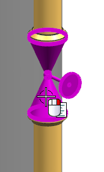
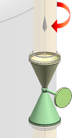

只使用两个分隔符来定义相同的三个管段
现在您已经知道如何创建管段分隔符，您可以更高效地创建它们，其中一个方法是使用管线端口的管段分隔符属性。
-
右击管道通路中的 RTG1_VA_300，然后选择设为工作部件。

-
选择审核部件
 。
。 -
在管线布置对象组中端口的下方，展开连接件节点。
-
右击 P1并选择编辑。
-
在管段分隔符列表中，选择是。
-
点击确定。
-
确保箭头朝上，背离阀。

如果不是，点击循环方向。
-
点击确定。
-
重复上述步骤将端口 P2的管段分隔符值从否变为是。
注释
对于 P2，确保箭头朝下，背离阀。
-
点击确定。
-
右击 P2并选择对象特性。
-
在特性列表中，选择 SPOOL_DELIMITER。
它的值现在为1，端口 P1的应该也是一样。
-
点击两次确定。
-
在装配导航器
 中，右击 rtg1_run_assembly_2并选择设为工作部件。
中，右击 rtg1_run_assembly_2并选择设为工作部件。 -
在管道通路导航器
 中，右击 RUN_1并选择检测管段。
中，右击 RUN_1并选择检测管段。 -
点击确定以接受生成管段 ID 对话框的默认设置。
-
展开 RUN_1，然后选择各个管段以查看在图形窗口中高亮显示的组件。
与之前定义的三个管段相同，但是这一次，您是通过在审核部件中添加管段分隔符属性来实现的。
注释
两个法兰与球阀之间有垫片。
您指定管段分隔符时无需选择垫片，但是如果您不选择，垫片将会自动包含在相邻的管段中。
-
关闭所有部件。